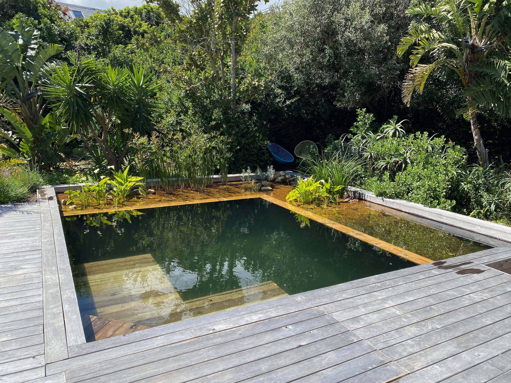

When converting an existing chlorine pool to a natural pool one essentially has 2 options, you can either create a cost-effective floating wetland inside the pool OR you can construct a permanent gravel wetland inside and/or outside the pool.
A gravel wetland can be added to any pool to convert it into a natural pool. This however requires the pool to be drained and for a retaining wall to be built to house the wetland and all the associated plumbing for the wetland. A wetland can be built inside or outside of the existing pool.
AVERAGE COST R80 000 - R400 000 The costs are much higher as one has to build permanent structures to hold gravel as well as redo all the plumbing, replace the pump, put in a pre-filter etc. The cost will vary depending on whether a pool needs repair, how large it is, and how ambitious the remodel is when it comes to decking, jetties, wetlands outside the pool, retaining structures etc.
by
originally published on www.leafandstone.co.za